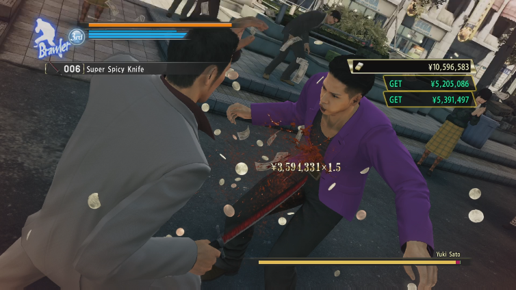

The story starts around a Yakuza guy named Kazuma who got framed for a murder. He goes around trying to find the actual culprit and clear his name,
although not for himself but for his who would have to take responsibility. As you play the game, the situation gets more complicated and more profound as you fight
other yakuza members and try to find out the truth behind everything. The game ends with the ultimate showdown between the big bads and the main character, Kazuma,
and his allies. During the fight, Kazuma loses it and is about to commit murder when an ally stops him. A while later, Kazuma’s name is cleared after the fight,
and he continues to be a yakuza in his own way.
You can do plenty of things within the game, like Karaoke, beating up thugs for money, beating up yakuza members for cash, Going into fast food chains
and stores to get food, etc. It is basically an open-world action adventure, with other mini-games and side stories or quests to fulfill.
Your goal is ultimately to beat everyone up without dying.
This game is fun. It keeps you entertained with the many things you can do within the game. The action is impressive. I remember playing it for the
first time, and I was lowkey cringing at the scenes where our character would break bones and smash people into the pavement.
The characters are unique and have little niches, which I find entertaining. The mini-games and side quests bring depth to the game that keeps you entertained
and wanting to know more about the world. Overall, the game is well-rounded in all aspects and is a classic.

This game is very action-packed, which is one of the main reasons I play it. “The pleasure of vigorous activity” is what keeps me playing.
From fighting people to the entertaining storyline to the mini-games like karaoke. Everything in this game is attention-grabbing and holds a little action or
things you have to participate in physically. You're not just sitting there along for the ride; you have to think, search, fight, and be tactical, and that’s
what is so remarkable about this game. You can do all of this and more.